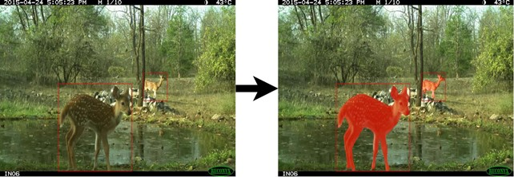
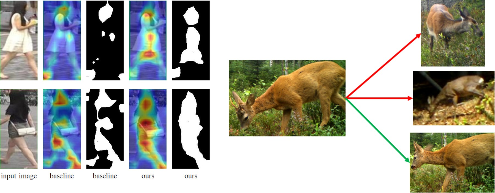
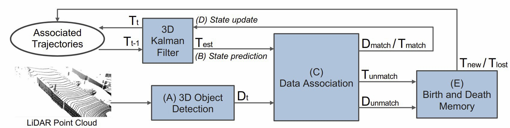

BA-INF 051 - Projektgruppe Intelligente Sehsysteme
PD Dr. Volker Steinhage
Dienstags, 14-16 Uhr, online
Vorbesprechung: Donnerstag, 18. März 2020, 16.15 Uhr via https://bbb.informatik.uni-bonn.de/b/vol-x2d-g4x
Themen:


|
Instance Rendering von synthet. Daten für Supervised Deep Learning Supervised Deep Learning erfordert große Mengen von annotierten Trainingsdaten. Häufig fehlen entsprechend große Mengen, sodass annotierten Trainingsdaten synthetisch erzeugt werden. In der Computer Vision steht dabei das Rendering von 3D-Szenen im Vordergrund. Neben regulären RGB-Bildern werden Segmentierungsmasken, Instanzenmasken oder Tiefenbilder gerendert. Zielsetzung der Arbeiten ist (1) die Generierung synthetischer Bildsequenzen von animierten Wildtiermodellen mit einer Rendering Engine, (2) das Training einer Deep-Learning-Architektur sowie (3) die Evaluierung der Ergebnisse. Zwingend erforderlich sind Kenntnisse in Computergrafik, Modellierung und Scripting mit Blender und Python oder mit Unreal Engine und C++. Begründete Alternativvorschläge für Rendering-Engines und Scripting-Umgebungen sind möglich. Hilfreich aber nicht erforderlich ist Erfahrung mit Deep Learning und Frameworks wie PyTorch oder Tensorflow. Oben und mittig: RGB-Bild, Instanzmaske, Tiefenbild, Pose (Quelle: NVIDIA). Unten: Synthetisches Rendering eines Rehs mit Objektmaske, RGB-Bild, Tiefenbild
|
|

|
Learning to Segment Every Thing with Few Annotations Beim Wildtiermonitoring stellt die Detektion und Lokalisierung von Tieren eine anspruchsvolle Aufgabe dar, die mit Methoden des Supervised Deep Learnings angegangen wird. Dafür sind große Mengen von Trainingsdaten erforderlich, die per Hand annotiert werden müssen. Die Lokalisierung kann dabei entweder mittels Bounding-Boxes (grob) oder mittels Instanzmasken (fein) erfolgen. Während erstere mit relativ geringem Aufwand annotiert werden können, so ist die Annotation bei Instanzmasken sehr viel aufwändiger. Die Methode von Hu et al. 2018 erlaubt es hingegen, auf solche manuell annotierten Instanzmasken zugunsten von Bounding-Boxes zu verzichten. Trotzdem können mittels dieser Methode Instanzmasken erzeugt werden, indem das Wissen, welches zur Vorhersage von Bounding-Boxes genutzt wird, auf die Vorhersage der Instanzmasken übertragen wird. Das Ziel ist die Anwendung der Methodik von Hu et al. 2018 auf mehrere Datensätze in der Domäne des Wildtiermonitorings. Falls für den jeweiligen Datensatz keine manuell annotierten Bounding-Boxes zum Training zur Verfügung stehen, soll ein robustes Modell zur automatisierten Erzeugung ebd. (Beery et al. 2019) eingesetzt werden. Ein weiteres Ziel ist die Fusionierung der Ansätze von Hu et al. 2018 und Beery et al. 2019 in einem grafischen Annotationstool. Erforderlich sind grundlegende Kenntnisse im Bereich des Deep Learnings und in Python. Bildquelle: eMammal
|
|  | Re-Identification (2 Themen / 2 Projektgruppenteilnehmende) Das Ziel ist die Analyse und die Anpassung einer Implementierung eines modernen Re-Identification Ansatzes, der auf Künstlichen Neuronalen Netzen basiert. Dabei wird mit Trainingsdaten aus einem aktuellen Forschungsprojekt gearbeitet. Bevor der Re-Identification-Algorithmus implementiert wird, gibt es eine kurze Einarbeitungsphase in Python und PyTorch, auf denen beide Ansätze basieren. Das Ziel eines Re-Identification-Algorithmus ist es, in einem Bild oder Video Objekte, z.B. individuelle Personen, wiederzuerkennen. Es geht also nicht nur darum, ein Objekt allgemein zu detektieren und zu klassifizieren, sondern jedes einzelne Individuum zu unterscheiden. Die angegebenen Re-Identification Verfahren basieren auf einer Personenwiedererkennung. Hier soll untersucht werden, ob sich die Verfahren auf Videodaten von Wildtieren übertragen lassen. Mögliche Probleme und Unterschiede bei der Anwendung auf Wildtierdaten sollen herausgearbeitet werden. Es gibt zwei Re-Identification Ansätze zur Auswahl für die Teilnehmenden:
|
|  | 3D Classification and Tracking Ziel ist, die mehrstufige Architektur von Weng et al. 2020 zunächst umzusetzen. Hierbei sollen anfangs 3D Punktwolken klassifiziert werden. Daraufhin sollen solche erkannten Objekte des Kalman-Filters verfolgt werden. Dazu sollen Ergebnisse visualisiert und evaluiert werden. Zuletzt sollten einzelne Systeme der Architektur optimiert werden bzw. auf neue Daten transferiert werden. Hierzu sollten (sehr-)gute Kenntnisse in Python (+ eventuell Cpp) und DL-Frameworks wie Pytorch vorliegen. Zudem müssen grundlegende Konzepte der KI und Neuronaler Netze, aber auch klassische Algorithmen wie der Kalman-Filter, verstanden sein. Bildquelle: Weng et al. 2020 |
Termine:
- Prioliste per Email bis Mo, 22.03.2021, 10 Uhr
- Zuordnungsmitteilung bis Mi, 24.03.2021, 18 Uhr
- 2-seitig. Expose (Ziel,Daten und Methoden,Zeitplanung) bis Mi, 31.03.2021, 14 Uhr
- Start der wöchentl. PG-Jour Fixe: Di, 13.04.2021, 14.00 s.t. per BBB mit Präsentationen der ersten Zwischenergebnisse
| Home | News | Teaching | Projects | Publications | Team |